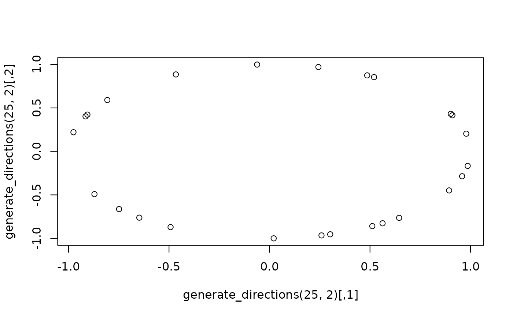

Obtain L random vectors on the unit sphere in d-dimensional Euclidean space.
Examples
generate_directions(10, 4)
#> [,1] [,2] [,3] [,4]
#> [1,] 0.008314096 -0.72285096 -0.68671571 -0.07641268
#> [2,] 0.127320549 -0.64277000 -0.02093469 0.75511452
#> [3,] -0.365192577 -0.71908604 0.40528767 -0.43045505
#> [4,] -0.783858026 -0.31684452 -0.32018641 0.42738368
#> [5,] 0.208907685 0.43177907 0.48684505 -0.73000432
#> [6,] -0.466661810 0.49184119 -0.10827245 0.72704613
#> [7,] -0.089901562 -0.09363501 -0.61346202 -0.77898302
#> [8,] 0.217972836 0.37941174 -0.58577586 0.68220321
#> [9,] -0.258645247 -0.69002202 0.25867325 0.62454816
#> [10,] 0.068763146 0.58382978 0.57613246 -0.56787834
plot(generate_directions(25, 2))
